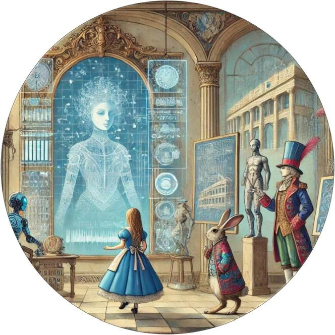

LLMs reflect patterns from training + your prompt; orientation comes from your context vs the model's training data.
Mirrors can distort . Control with source‑grounding, evidence requests, and HIL checkpoints.
Meaning shifts with rules/definitions terms, schema, exemplars.
